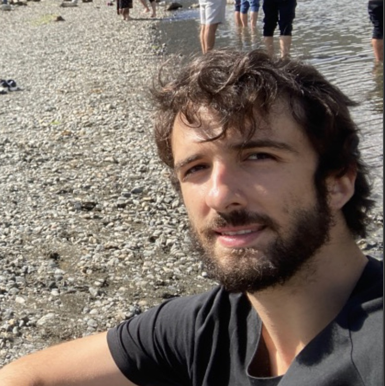

Team

Dr. Alex Ganose
Lecturer, Imperial College LondonCo-investigator, Materials Project
Alex Ganose is a Lecturer and EPSRC Fellow in the Department of Chemistry at Imperial College London.
His research uses computational materials chemistry, machine learning, and data science to design new materials for pressing problems, including renewable energy generation (photovoltaics & thermoelectrics) and energy storage.
Alex was awarded his EngD in chemistry from University College London in 2018. After a Postdoctoral position at Berkeley Lab, California he joined Imperial as an EPSRC Fellow in 2021. In 2022, he was appointed as a Lecturer in the Department of Chemistry. He is a co-investigator at the Materials Project.
You can contact Dr Alex Ganose by email.
Senior Researchers

-
Dr Xinwei Wang
Project: Accelerated defect modelling with machine learning
Xinwei Wang is an Eric and Wendy Schmidt AI in Science Postdoctoral Fellow in the Department of Chemistry at Imperial College London. She obtained her PhD in Materials from the same institution. Her research interests are accelerating the identification and optimisation of emerging solar absorbers using data-driven approaches. During her fellowship, she’s focused on using AI and machine learning techniques to advance defect modelling. In her free time, Xinwei enjoys photography and hiking.
- 
-
Dr Federico Ottomano
Project: Mixed modality generative AI for molecules and materials
Federico obtained a Ph.D. in Computer Science from the University of Liverpool, where he worked in the domain of AI4Science, specializing in AI-driven materials discovery. His research interests include graph neural networks and deep generative models with applications in the Chemistry domain, targeting the generation of molecules and materials. He joined the AIchemy AI for Chemistry Hub as a postdoc in Jan 2025. In his free time, he enjoys playing jazz piano.

-
Dr Wojciech Stark
Project: Multi-fidelity closed-loop Bayesian optimisation of chemical experiments
Wojciech obtained his PhD in Chemistry from University of Warwick, where he developed machine learning models for gas-surface dynamics using uncertainty-driven adaptive sampling. In 2025, he joined Imperial as a Research Associate in AI for Chemistry, focusing on multi-fidelity closed-loop Bayesian optimisation for chemical experiments. In his free time, Wojciech enjoys fitness activities, attending operas, and watching stand-up comedy.
PhD Students

Ruiqi Wu
Project: Designing novel photovoltaics through machine learningRuiqi grew up in China, from a small city where Tofu is believed to originate from. She obtained undergraduate degrees in Materials Engineering at both the University of British Columbia (Canada) and Chongqing University (China) where she investigated metal processing, batteries and transistors. After graduating with a distinction in Advanced Materials Science from UCL, Ruiqi joined the group in November 2022 as the first PhD student, focusing on designing earth-abundant photovoltaics. When she’s not studying, Ruiqi enjoys cooking, manga and fossil hunting.

Yifan Wu
Project: Accelerating materials synthesis and computationCo-supervisor: Prof. Aron Walsh

Irea Mosquera Louis
Project: Defect representations in solid-state materialsCo-supervisor: Prof. Aron Walsh

Leo Lou
Project: Machine learning to accelerate the discovery of energy materialsLeo is a second year PhD student in the Virtual Atoms Group. He joined the group in 2022 as a Masters student as part of his undergraduate degree, and continued as a PhD student in 2023. Since then, he has been applying machine learning to problems in chemistry and materials. He is currently working on generative models for crystalline materials. Leo is an amateur classical pianist, Magic the Gathering player, and an enthusiast for PC games.

Shirui Wang
Project: Finite-temperature materials discoveryShirui Wang graduated with a Bachelor of Science degree in Chemistry from the University of Birmingham in July 2022. He then completed a Master of Research (MRes) in Nanomaterials at Imperial College with distinction. Shirui joined the group in December 2022 as a master student, working on a project titled Computational Insights into Emerging Chalcogenide Perovskite Photovoltaics. Following the completion of his master, he continued with the group as a PhD student, now focusing on replacing heavy DFT calculations with machine learning techniques.

Viktor Ellingsson
Project: Halide solid electrolytes for all-solid-state batteriesViktor is a President’s PhD Scholar in the Department of Chemistry at Imperial College London.
Viktor is from Iceland and graduated with a BSc in Chemistry with a focus on computational techniques from the University of Iceland. His BSc project looked at the computationally aided design of ammonia NRR catalysts with Prof. Egill Skúlason in collaboration with Atmonia. After the BSc degree he spent one year in the United States at the University of California Santa Barbara attending the UCSB Extension program. In 2022, he joined the STEM Group at the University of Oxford supervised by P. D. Nellist, R. J. Nicholls, and P. G. Bruce. At Oxford he explored the redox mechanism of disordered rocksalt Li-ion cathode materials using electron microscopy and computational modelling. Viktor joined the Virtual Atoms Lab group in November 2023. In his spare time, Viktor enjoys reading, listening to music, and brewing coffee as well as playing Badminton.
Visiting Students

Ling Zhang
Ling is from Henan, China, and she will study at IC as a joint PhD student for 12 months. She is currently a PhD student at Beihang University, China, and her PhD project focuses on the polaronic defects in oxides. Now at IC, Ling will start a new project focused on defects in ultra-wide band gap semiconductors under the supervision of Dr. Alex Ganose. Ling enjoys running, reading and watching movies at her free time.
Masters Students

Thomas Selby
Project: Fine-tuning universal force fields through uncertainty quantificationThomas is from Chesterfield, England, and is a masters student studying chemistry with molecular physics, also completing a year in industry as an analytical chemist with GSK. His project is focused on fine-tuning universal force fields through uncertainty quantification. In his spare time, Thomas plays football for Imperial’s first team.

Jiawen Han
Project: Computational screening of emerging chalcogenide photovoltaicsJiawen began her studies at Imperial as an undergraduate in chemistry. She joined the research group in 2024 and is currently working on her master’s research project, which focuses on the computational screening of next-generation chalcogenide photovoltaic materials. Outside of her academic pursuits, Jiawen is passionate about creativity and adventure. She is an amateur music composer, a cook who enjoys exploring world cuisines, a travel enthusiast, and an avid skater.
Katrina Zhong
Project: Crystal structure prediction with universal force fields
Tianyu Xu
Project: Machine learning of dielectric tensorsTianyu is a fourth-year MSci student who want to deepen his understanding of DFT and machine learning, with a focus on training a universal model for predicting dielectric properties. He also has a strong interest in history and warships, particularly the World War II part.